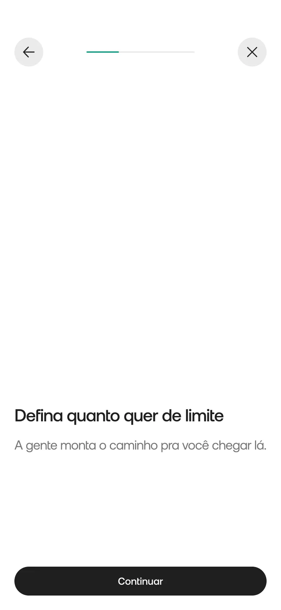
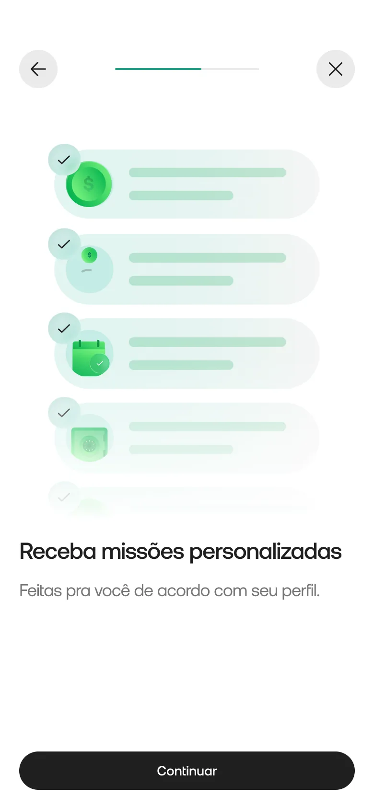
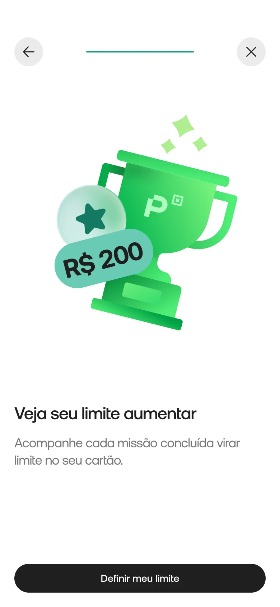
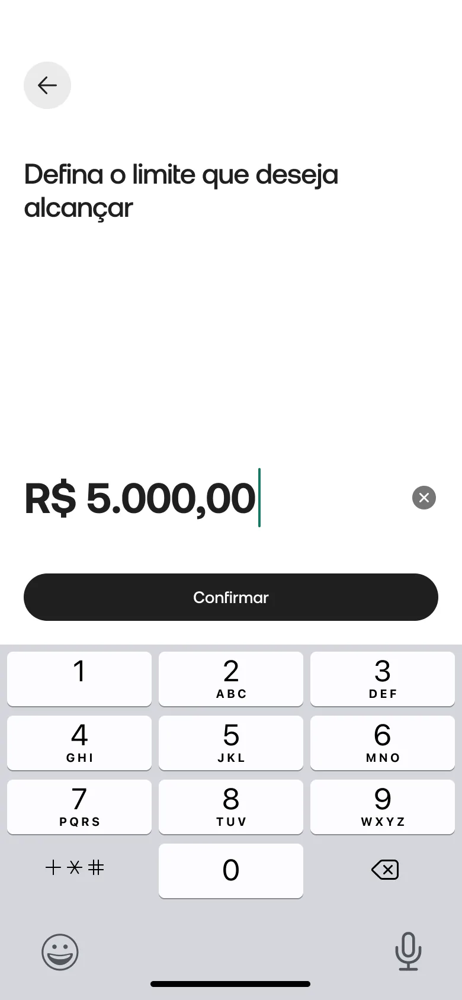
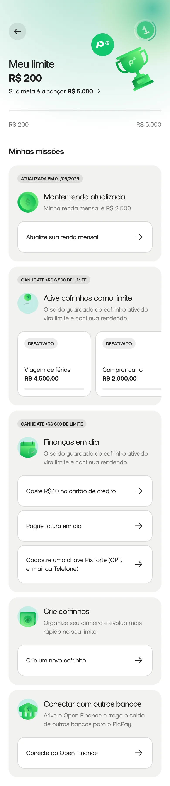
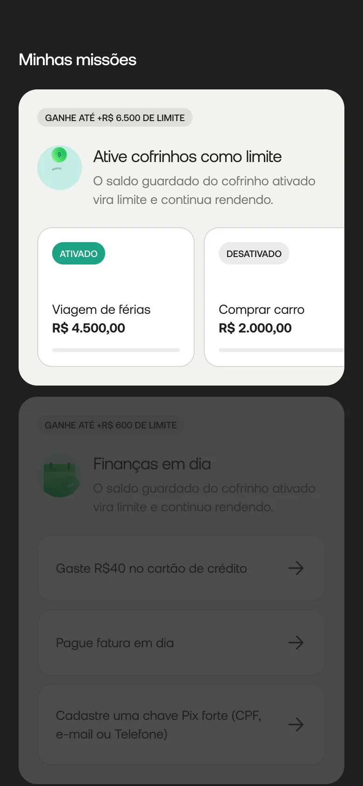
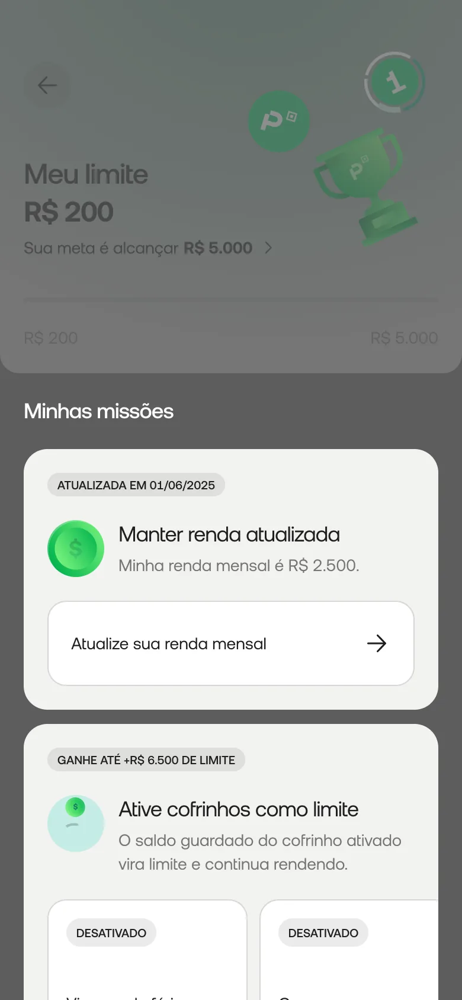
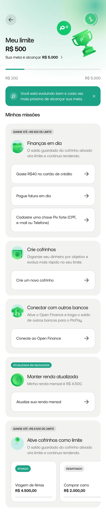

O limite de crédito costuma aparecer como um número, mas nem sempre como uma jornada que o cliente consegue compreender. O Game de Limite partiu dessa tensão para explorar metas, missões financeiras e feedback de progresso.
Como dar ao cliente um caminho, não apenas um número?
O desafio do produto era ajudar clientes a construir limite de crédito por meio de tarefas e missões, usando elementos de gamificação para dar orientação ao longo do caminho. Em vez de apresentar somente um valor disponível, a experiência precisava mostrar possibilidades de ação e tornar a evolução visível.
O que posso fazer agora? Quais ações estão ao meu alcance?
Como acompanhar o que já fiz e entender o próximo passo?
Como tornar o percurso estimulante sem tratar crédito como uma recompensa garantida?
Como explicar condições e resultados financeiros de maneira responsável?
Transformar uma intenção em meta.
O conceito conecta três momentos: definir um objetivo de limite, receber missões relacionadas ao perfil e acompanhar a progressão. As telas mostram uma trilha com valores intermediários, feedbacks e mensagens de incentivo. A gamificação funciona como linguagem de orientação para ações financeiras reais — não como promessa indiscriminada de crédito.
O cliente informa o limite que gostaria de alcançar.
Ações como atualizar renda, usar o cartão e ativar cofrinhos.
Progresso, estados das missões e feedback sobre o limite.
Explicar a proposta antes de pedir uma meta.
O onboarding apresenta a ideia de meta, missões personalizadas e progresso visível antes da entrada no produto. A definição do valor desejado transforma uma promessa ampla em um objetivo concreto que organiza a experiência.




Missões financeiras como próximos passos.
O hub reúne missões relacionadas a organização financeira e relacionamento com o produto: uso do cartão, pagamento da fatura, cadastro de chave Pix, criação ou ativação de cofrinhos, atualização de renda e conexão via Open Finance. As missões aparecem agrupadas e associadas a oportunidades de evolução previstas no desenho.

Gamificação como orientação, não apenas estética.
A escolha por metas, missões e feedbacks dá estrutura às decisões do cliente. O ponto relevante não é o troféu, mas a clareza sobre o que fazer e o que esperar.

Mostrar progresso sem prometer crédito.
As explorações incluem mensagens contextuais sobre ações pendentes, confirmação de etapas e estados de progressão. Há também um desfecho de conclusão das missões e convite para definir uma nova meta. A experiência procura manter a pessoa orientada enquanto o produto responde às ações realizadas.


A jornada comunica metas e ações possíveis, sem tratar a participação nas missões como garantia de aumento de limite.
Liderança próxima da pesquisa e da execução.
Atuei acompanhando o designer responsável ao longo do desenvolvimento, com participação nas pesquisas, nos workshops e também em atividades hands-on de design. Minha contribuição combinou direcionamento e colaboração no processo, mantendo proximidade com as decisões de experiência e sua materialização.
O beta do Game de Limite foi disponibilizado para 2.000 pessoas de um grupo de controle. Esse número descreve o alcance inicial do teste, não uma taxa de adesão, engajamento ou resultado financeiro.
Como avaliar o aprendizado do beta.
Na avaliação do beta, os indicadores centrais seriam ativação da jornada, conclusão de missões, recorrência de uso, compreensão das condições e evolução do limite, acompanhada da qualidade da carteira.
Proporção de clientes elegíveis que iniciaram a jornada e definiram uma meta.
Taxas de início e conclusão por tipo de tarefa.
Retorno ao produto, progresso e desistências por etapa.
Evolução de limite, qualidade da carteira e clareza das condições.